Embodied AI · Real2Sim · Research Automation
로봇의 다음 도약은
‘시뮬을 만드는 AI’에서 올까
Gemini 4 Argon 사례에서 주목할 변화는 텍스트로 로봇을 움직이는 능력, 그리고 그 로봇이 연습할 환경까지 만드는 능력. 시뮬레이션과 현실을 잇는 반복 작업이 어떻게 바뀌고 있는지 살펴봄.
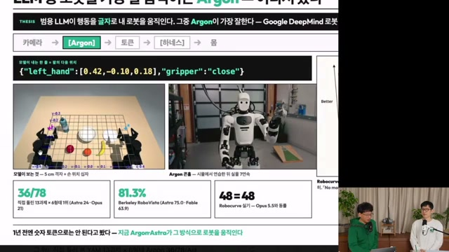
행동을 출력하는 모델에서,
실험을 구성하는 에이전트로
영상은 범용 LLM인 Gemini 4 Argon이 카메라를 보고 좌표·관절값을 텍스트로 출력하는 사례를 소개함. 진행자의 MuJoCo 실험에서는 13과제 × 6출력형태 중 36/78 성공을 기록했으며, 비교 모델은 Astra 24/78, Opus 21/78로 제시됨.
더 큰 시사점은 Real2Sim 장면 구축 → 물성값 추정 → 시뮬레이션 탐색 → 실물 교정의 연결. 모델이 정책 실행뿐 아니라 연구 환경과 데이터를 만드는 작업에도 관여한다는 점임. 다만 공개 성공 데모, 작은 시뮬레이션 실험, 진행자 해석이 섞여 있어 근거의 성격을 구분할 필요.
자료 범위 — 제공된 Obsidian 노트와 24개 영상 프레임을 재구성한 2차 자료. 이 글에서 원 논문·공식 발표·벤치마크 프로토콜을 별도로 대조하지 않았으며, 모델명·수치·제품 조건은 노트에 기록된 영상 시점의 내용으로 제시함. 출처와 검증 범위 보기
새 과제를 푸는 가능성
진행자 시뮬 실험에서 Argon이 비교 LLM 중 최다 성공. 단일 로봇·단일 배치·조건당 1회 결과라는 제약.
실시간 제어와의 거리
LLM 호출 중앙값의 대략적 범위. 빠른 반응이 필요한 동작에는 별도의 저수준 제어 구조가 필요하다는 신호.
연구 과정의 자동화
장면 구축·물성 추정·데이터 생성·평가를 반복하는 루프가 핵심 변화. 물리 정확도와 실물 리셋은 여전히 병목.
모델은 좌표를 고르고,
하네스는 움직임으로 번역함
“텍스트로 로봇을 제어한다”는 말에는 중요한 중간 계층이 있음. 모델의 숫자 출력을 실제 동작으로 바꾸는 하네스가 바로 그 계층.
영상에 소개된 zero-shot 인터페이스에서는 모델이 격자가 덧씌워진 카메라 이미지를 보고 이미지 좌표 (u, v)와 높이 평면을 선택함. 좌표 보정, 3차원 역투영, 역기구학(IK), 충돌 검사와 실행은 하네스의 역할로 설명됨.
따라서 로봇 전용 액션 디코더가 없다는 설명이 제어 소프트웨어 전체의 부재를 뜻하지는 않음. 모델이 선택하는 행동의 표현과 하네스가 제공하는 기능을 함께 봐야 성능을 해석할 수 있음.
관측 → 선택 → 변환 → 실행 → 재관측
격자·손 위치 오버레이
또는 관절값을 텍스트로 출력
IK·충돌 검사·실행 연결
결과를 다시 촬영
관측 결과를 다음 모델 호출에 전달 ↺ · 구체적인 처리 경로는 출력 인터페이스에 따라 달라짐
영상 첫 장의 출력 예시는 다음과 같은 형태. 이는 화면에 제시된 예시이며, 모든 하네스가 공유하는 API 규격을 뜻하지 않음.
{"left_hand":[0.42,-0.10,0.18],"gripper":"close"}Berkeley Goldberg 랩의 오픈 하네스 재현 사례로 소개된 YAM 양팔 건네기는 18턴·8분 23초의 성공 런. “모델이 이미지 위 점 하나를 고른다”는 단순한 인터페이스와, 여러 차례 관측·행동을 반복하는 긴 실행 시간이 함께 드러남.
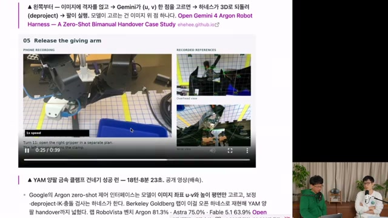
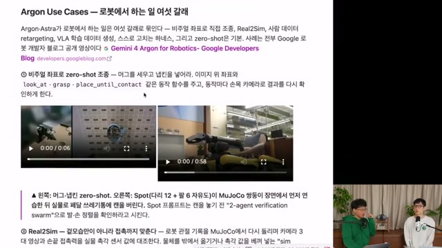
look_at, grasp, place_until_contact 같은 함수를 사용하고 손목 카메라로 결과를 재확인하는 구조.숫자 토큰 자체는 새로운 발명이 아님
영상은 RT-2와 OpenVLA를 앞선 사례로 제시함. 연속 행동을 이산화한 숫자 토큰으로 출력하고, 이를 팔의 이동·회전·그리퍼 동작으로 되돌리는 방식은 이미 존재했음.
진행자가 강조하는 차이는 새로운 환경과 몸체의 명세를 받은 범용 모델이 어디까지 적응하는가에 있음. 다만 “해당 과제를 위한 추가 학습 없이 실행”했다는 설명과 “모델이 과거에 관련 로봇 데이터를 전혀 보지 않았다”는 주장은 구분해야 함. 후자는 이 자료로 확인되지 않음.
닮은 장면을 넘어,
접촉과 움직임까지 맞추기
Real2Sim의 목표는 현실과 비슷한 그림을 만드는 데서 끝나지 않음. 같은 동작을 넣었을 때 비슷한 결과가 나오는 환경을 만드는 작업.
노트에 따르면 Argon은 로봇 관절 기록을 MuJoCo에서 재생하고, 카메라 3대의 영상과 손끝 접촉력을 실물 관측에 대조하는 역할로 소개됨. 제어 게인, 감쇠, 마찰 계수 등을 조정해 관측 오차를 줄이는 시스템 식별(system identification) 과정임.
이때 물체를 외부에서 옮기거나 실제 촉각 값을 시뮬레이터에 그대로 넣어 결과를 맞추는 ‘sim cheating’은 프롬프트에서 금지했다고 기록됨. 중요한 것은 화면상의 성공보다 모델링된 물리로 결과를 재현하는가라는 점.
-
현실 관측을 수집
사람의 시범, 카메라 영상, 로봇 관절 기록, 접촉력 등 사용 가능한 정보를 모음.
-
장면과 물성값을 추정
시뮬레이션 장면을 만들고 게인·감쇠·마찰 등을 조정해 실제 관측과 맞춤.
-
시뮬에서 동작을 탐색
궤적을 바꾸며 결과를 비교. 실물 시행착오 이전에 후보 동작을 좁히는 단계.
-
실물에서 오차를 교정
현실의 실행 결과를 다시 반영. 성공 조건이나 환경이 바뀌면 추가 교정이 필요할 수 있음.
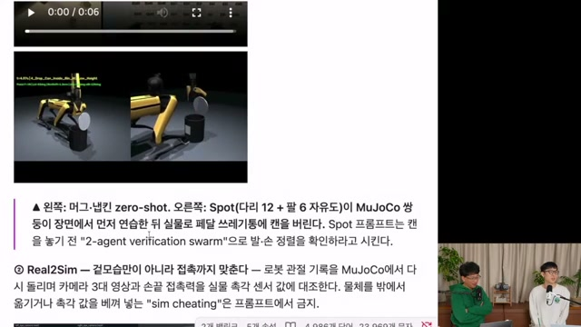
콘홀 데모: 성공보다 흥미로운 교정 과정
휴머노이드가 콩주머니를 보드의 구멍에 던지는 콘홀 사례에서는 사람 시범 영상으로 시작해 시뮬 장면과 던지기 궤적을 구성하고, 실물에서 여러 차례 교정한 뒤 7회 연속 성공한 것으로 소개됨.
모델은 목 관절을 움직였을 때 카메라 시야가 어떻게 달라지는지 탐색함. 반면 던지는 과정에서 콩주머니가 자신의 허벅지에 부딪히는 문제는 스스로 알아채지 못했고, 사람이 이를 지적한 뒤 수정했다고 자막에 기록됨.
특정 설정에서 교정된 동작의 반복 성공 사례. 전체 시도 횟수·실패율·개입량이 충분히 공개된 평가로 보기는 어려움. 위치나 자세가 바뀌면 루프를 다시 돌아야 한다는 한계도 영상에서 언급됨.
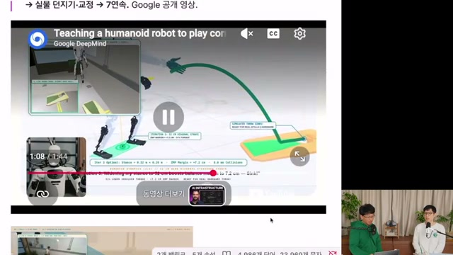
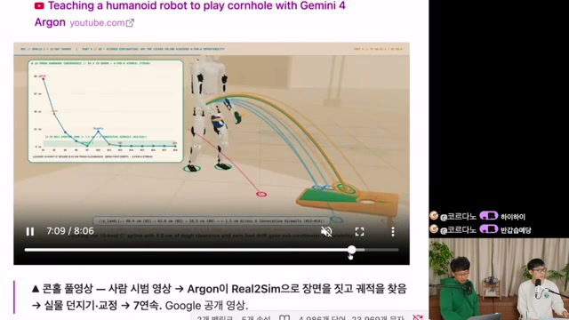
로봇이 배울 환경을 만드는 비용이 줄어들면,
이 글의 해석 · Real2Sim과 시스템 식별 사례에서 도출한 연구 생산성 관점
정책을 개선하는 실험의 속도도 달라짐.
느린 모델도,
빠른 로봇을 위한 일을 할 수 있음
매 순간의 제어를 맡기 어려워도 오프라인 데이터 생성과 분석에는 활용 가능. 영상의 사례들은 실행 중의 지능과 학습 준비 과정의 지능을 함께 보여 줌.
사람의 동작을 옮기고, 학습 데이터를 생성
리타기팅(retargeting)은 사람 영상의 손목·손가락 3D 키포인트를 로봇의 관절 구조로 옮기는 작업. 노트에는 팔 7자유도·손 22자유도 구성과 500Hz MuJoCo 실행 사례가 기록됨. 여기서 500Hz는 시뮬레이션 실행 관련 수치이며 LLM의 호출 빈도를 뜻하지 않음.
또 다른 사례는 시뮬레이션에서 4,500개 이상 에피소드를 만들어 VLA를 파인튜닝하는 흐름. 영상이 인용한 Google 제시 값은 실물 성공률 56% → 75%, 완료 시간 35초 → 24초. 평가 조건을 원문으로 대조하지 않았으므로 다른 과제에 그대로 적용할 개선 폭으로 볼 수는 없음.
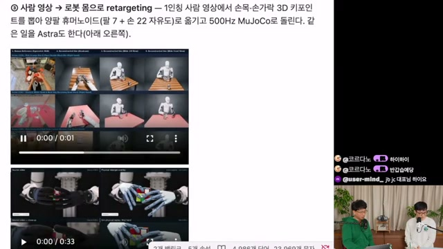
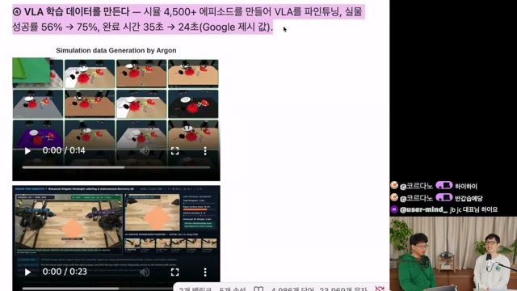
에피소드에 설명을 붙이고, 실패를 다시 읽기
종이접기 화면에서는 전체 목표, 하위 과제, 동작 해설과 진행 타임라인이 함께 표시됨. 동작을 생성하는 것뿐 아니라 어떤 단계에서 무엇을 했는지 구조화하는 어노테이션도 활용 영역으로 제시됨.
SO-101의 세 차례 자기개선 사례는 완료 시간이 22.9초 → 17.4초로 줄어드는 것으로 소개됨. 그러나 무엇이 바뀌었는지는 공개 자료에서 확인되지 않았다고 진행자 페이지 자체가 명시함. 이를 곧바로 가중치 학습의 증거로 읽어서는 안 됨.
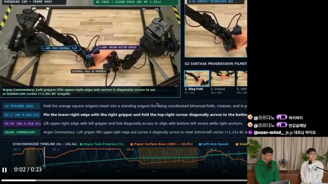
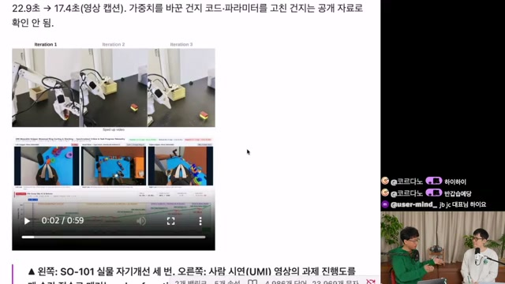
가중치 대신 파일에 쌓는 경험
영상이 인용한 SenseTime의 66쪽 리포트 「Has GPT-6-Astra Achieved Embodied Intelligence?」는 과제 안내, 참조 궤적, 사진, 실행 보조 코드, 성공 확인 절차를 모델이 파일 묶음으로 구성하는 방식을 소개함. 노트상 평가 범위는 시뮬레이션 12개·실기 8대.
.md 과제 안내 · .npz 참조 궤적 · 참조 사진 · FK/IK 헬퍼 코드 · 성공 판정 및 복구 절차 · 메타데이터와 출처. 시험 시 이 묶음을 제공해 검색·적응·확인에 활용하는 구조로 설명됨.
Shadow Hand 공 들기 사례에서는 손가락 굽힘 5개와 엄지 1개, 총 6개의 숫자를 조합하고 8회 호출을 거쳐 재시도한 것으로 기록됨. 처음 놓친 뒤 물러나 다시 잡아 0.12m 들어 올렸다는 설명은 실패 복구 가능성과 호출 지연을 동시에 드러냄.
점수의 우열보다 먼저,
무엇을 같은 조건에서 쟀는가
이 영상에는 서로 다른 세 종류의 평가가 등장함. 진행자의 MuJoCo 실험, RoboVista, Robocurve 실기 결과를 하나의 종합 순위로 읽으면 결론이 왜곡됨.
진행자 실험 · 시뮬레이션직접 실험의 조건은 YAM 로봇 하나, 13과제, seed 0의 단일 배치, 조건마다 1회. LLM은 6가지 출력형태로 각각 평가해 모델당 78판, Dream-1은 한 가지 형태로 13판을 수행한 구성.
| 모델 | 전체 성공 | 평가 형태 | 가장 잘된 형태 |
|---|---|---|---|
| Dream-1 | 1/13 | 관절 청크 1종 | 1/13 |
| Opus 5.5 | 21/78 | 6종 | 6/13 · ee6 |
| GPT-6 Astra | 24/78 | 6종 | 6/13 · ee4, ee6 |
| Gemini 4 Argon | 36/78 | 6종 | 8/13 · ee6 |
출처: 영상 00:28:47의 진행자 점수판을 정리한 원 노트. 최적 형태 점수는 실험 후 선택된 요약이며 독립적인 재평가 결과가 아님.
같은 13과제를 인터페이스별로 반복한 결과이므로 78개의 독립적인 과제를 해결했다는 의미가 아님. 단일 배치·1회 시도로는 반복 실행 변동성이나 배치 변화에 대한 일반화를 판단하기 어려움.
판독 가능한 세부 결과에서는 Argon의 서랍 열기 6/6, 버튼 누르기 5/6, 누운 병 세우기 1/6이 기록됨. 관절값을 직접 출력하는 joint 조건은 Argon 6/13, Astra 2/13, Opus 1/13. 좌표 선택을 넘어 관절 공간을 다룬다는 신호지만, 가능한 모든 몸체와 작업으로 확대할 근거는 부족함.
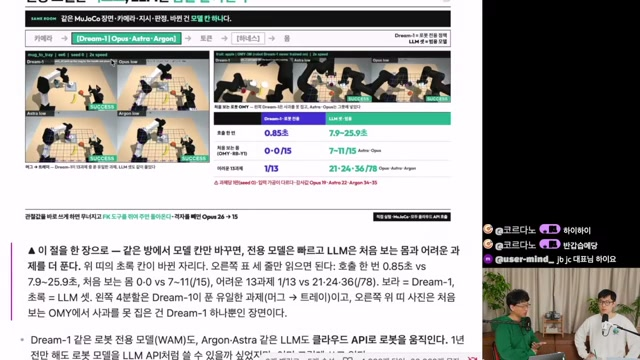
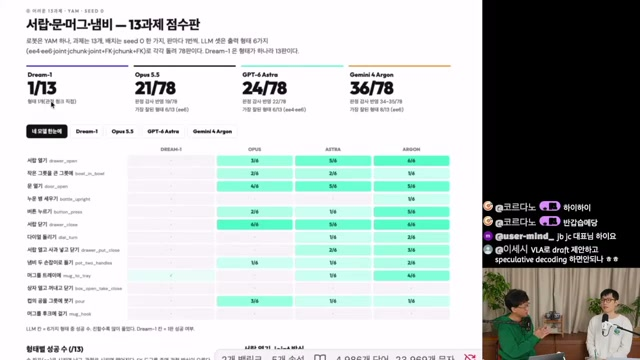
출력 인터페이스도 실험 변수
모델이 손끝 위치를 정하는지, 각 관절을 직접 움직이는지, 여러 시점의 궤적을 묶어 내는지에 따라 필요한 추론과 제어 부담이 달라짐. 하네스가 제공하는 도구의 영향도 함께 봐야 함.
| 형태 | 출력·도구 | 조건과 의미 |
|---|---|---|
ee4 | x · y · z · yaw | 손끝 위치와 한 축의 회전. 위에서 접근하는 조작에 대응. |
ee6 | ee4 + pitch · roll | 손끝의 전체 자세를 지정. 비스듬한 접근·당기기 가능. |
joint | 관절값 직접 출력 | 호출당 관절 변화 ≤ 0.8rad. |
jchunk | 관절각 10줄 | 0.3초 간격, 3초 분량으로 설명된 궤적 묶음. |
joint_fk | joint + FK 도구 | 관절값에 따른 손끝 위치를 질의. |
jchunk_fk | jchunk + FK 도구 | 궤적 묶음에 순기구학 질의 추가. |
FK: 관절값 → 손끝 위치·자세. IK: 목표 손끝 위치·자세 → 관절값. 영상에서는 FK 도구 제공 시 판당 모델 호출 수가 약 2배로 늘었다고 설명. Dream-1의 청크는 48줄·2.4초로 소개됨.
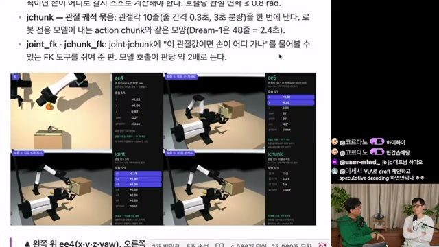
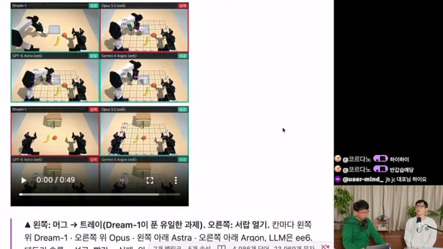
빠름·비용·성공률은 함께 움직이지 않음
진행자 실험에서 Dream-1은 호출 중앙값 0.85초, LLM은 7.9~25.9초. 이는 모델 호출 시간이며 모터 제어 주기와 동일한 지표가 아님. 판당 완료 시간과 비용도 별도로 비교해야 함.
| 모델 | 호출 시간 중앙값 | 판당 시간 중앙값 | 판당 비용 |
|---|---|---|---|
| Dream-1 | 0.85초 | 약 110초 | $0.05 |
| Opus 5.5 | 7.9초 | 742초 | $1.4 |
| Gemini 4 Argon | 17.9초 | 952초 | 구독 사용 · 별도 수치 없음 |
| GPT-6 Astra | 25.9초 | 1,100초 | 구독 사용 · 별도 수치 없음 |
영상 00:25:57의 진행자 실험 값. 같은 화면의 Robocurve Dream-1 비용 $0.15·시도당 1.4분은 별도 실기 평가 수치.
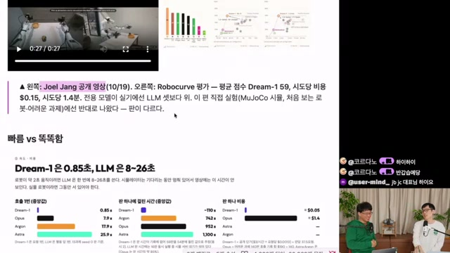
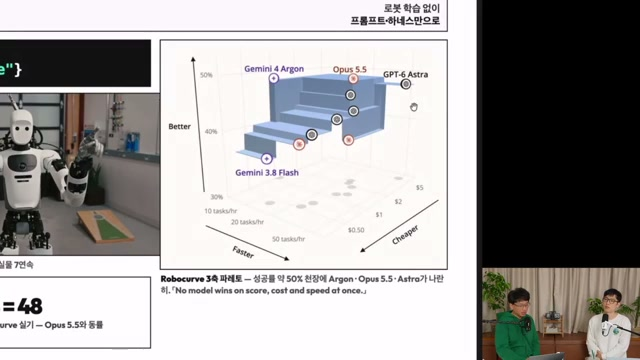
다른 벤치마크가 보여 주는 경계
RoboVista는 Argon 81.3%, Astra 75.0%, Fable 5.1 63.9%로 소개됨. Robocurve의 RoboDojo-RC Tier 1 화면은 Opus 5.5 48, Argon 48, Astra 47, Kimi K3.1 Pro 9를 제시함. 표본·과제·채점 방식이 서로 달라 숫자를 직접 연결할 수는 없음.
Kimi의 BenchCAD 92.7·OSWorld 79.6과 실로봇 9점의 대비는 디지털 공간 과제 점수만으로 로봇 제어 성능을 예측하기 어렵다는 문제를 제기함. 다만 이 불일치만으로 벤치마크 과적합이나 데이터 오염을 입증할 수는 없음.
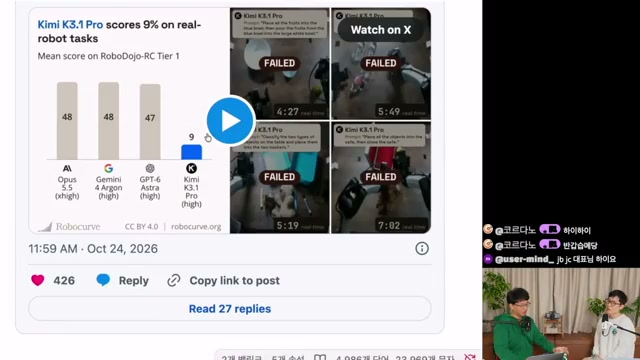
능력이 어디서 왔는지는
아직 설명되지 않음
행동을 관찰하는 것과 학습 경로를 알아내는 것은 다른 문제. 이 자료에는 사전학습·강화학습·로봇 데이터의 기여도를 분리할 근거가 없음.
영상은 Argon 출시 글이 공간 추론, 수학적 정밀성, 시각적 코딩을 강조했다고 소개함. Blender MCP를 자율 루프로 다루는 사례와 Genie 4 장면을 단계적으로 이끄는 사례도 거론됨.
또 Google DeepMind 로봇 팀이 개발에 함께했고 사전학습 단계부터 기여한다는 설명, ERQA 87%라는 수치가 제시됨. 그러나 구체적인 학습 데이터와 레시피는 공개 자료에서 확인되지 않았다고 원 노트에 기록됨.
진행자의 “로봇 데이터가 사전학습에 들어갔을 것”이라는 판단, CAD·Blender·에이전트 RL에서 능력이 전이됐을 것이라는 가설은 가능한 설명으로 남겨 두어야 함. YAM처럼 널리 쓰이는 몸체를 이미 학습했을 가능성 역시 배제되지 않음.
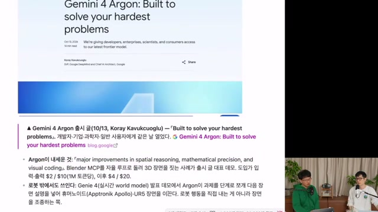
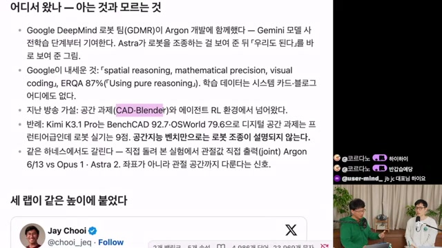
원 노트는 Argon의 100만 토큰당 입력·출력 가격을 도입가 $2 / $10, 이후 $4 / $20로 기록함. Antigravity 구독을 통한 실사용과 외부 하네스 연결의 제약도 언급. 이 글은 현재 판매·접근 조건을 확인하지 않았으므로 이용 안내로 해석하지 않음.
Gemini가 도구 생태계 때문에 저평가된다는 주장이나, Codex 접근성이 Astra 기반 연구 확산에 기여했다는 설명도 진행자의 해석. 모델 성능, 접근성, 하네스 품질을 분리해 검증한 결과는 이 자료에 없음.
상위 판단은 LLM,
빠른 움직임은 전용 제어
영상이 제안하는 방향은 역할의 결합. 범용 모델이 계획·환경 구성·교정을 맡고, VLA·WAM과 고전 제어기가 빠른 동작을 맡는 계층 구조.
진행자 전망 + 이 글의 해석LLM의 수초~수십초 호출 지연은 반응성이 필요한 과제에 제약이 됨. 반면 장기 계획, 실패 해석, 낯선 도구 사용, 오프라인 실험에는 더 긴 계산 시간을 허용할 수 있음. 업무별 시간 요구를 나눠 배치하는 설계가 영상의 관측과 가장 잘 맞는 적용 방향.
LLM · 목표 분해, 장면 이해, 실험 구성, 결과 분석, 실패 후 계획 수정
VLA / WAM / 하네스 · 동작 생성, 좌표 변환, 궤적 처리, 실행 조건 검사
로봇 제어기 · 관절 구동, 빠른 피드백, 센서 관측을 상위 계층으로 전달
개념도: 영상 논의를 바탕으로 재구성한 역할 분담. 특정 데모의 실제 소프트웨어 구성을 그대로 재현한 도식은 아님.
진행자들은 WAM 출력을 LLM이 보정하거나 두 모델을 결합하는 방식을 speculative decoding에 빗대어 전망함. 이 비유는 혼합 구조의 가능성을 설명하지만, 로봇 제어에서의 구체적인 지연·안정성·성공률 개선을 이 자료가 입증한 것은 아님.
클라우드 API로 로봇을 움직인다는 사례 역시 모든 제어를 원격으로 옮길 수 있음을 뜻하지 않음. 공장 전체를 추론 서버가 지휘하는 미래상은 영상 속 전망이며, 통신 지연과 현장 제어의 역할 분담은 별도 설계·검증 대상.
Real2Sim 자동화 이후에도 남는 세 가지
물리 정확도의 상한
강체·변형체·유체를 함께 다루는 문제, 접촉과 마찰, 기어 백래시 같은 효과는 장면 생성만으로 해결되지 않음. 무엇을 정확히 재현해야 하는지 먼저 정의할 필요.
정밀도와 병렬성의 절충
포토리얼리즘·물리 정밀도·RL용 대량 병렬 실행은 서로 다른 요구. 정교한 시뮬이 평가에는 유용해도 학습용 처리량을 제공할지는 별도 문제.
현실에는 리셋 버튼이 없음
실물 실패 이후 물체와 환경을 되돌리는 작업이 남음. 자율 실험의 처리량을 판단할 때 사람의 리셋 시간과 개입 횟수도 포함할 필요.
촉각을 이해하는 공통 인터페이스
센서 매뉴얼과 소수 샘플을 제공하면 서로 다른 촉각 센서를 해석할 수 있을 것이라는 전망. 자막에서 나온 가설이며, 검증된 결과로 제시되지는 않음.
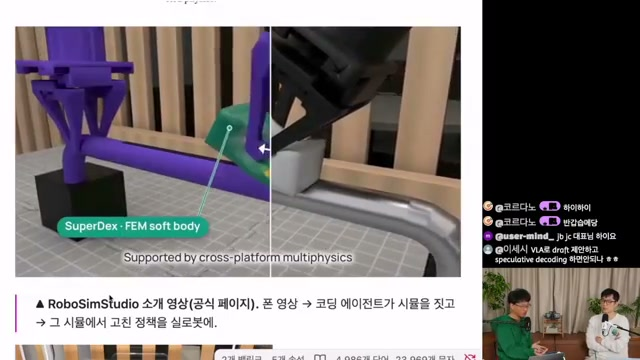
연구 현장에 먼저 던질 질문
- 가장 많은 시간을 쓰는 준비 작업은 무엇인가? 환경 모델링, 물성 추정, 데이터 생성, 어노테이션 중 자동화 효과를 측정할 대상을 선정.
- 시뮬의 어떤 오차가 실제 실패를 만드는가? 화면 유사도뿐 아니라 접촉력·궤적·성공 여부 등 과제에 맞는 지표를 정의.
- 성공까지의 전체 비용은 얼마인가? 호출 비용, 경과 시간, 실물 시도, 사람 개입과 리셋을 함께 기록.
- 처음 보는 조건에서도 반복되는가? 배치·물체·몸체를 바꾸고 여러 번 실행해 데모의 범위를 확인.
출처와 검증 범위
이 글의 직접적인 입력은 제공된 Obsidian 노트. 노트는 자막·영상 메타데이터·화면 프레임을 종합했으며, 화면 속 외부 논문과 공식 발표를 직접 대조하지 않았다고 명시함. 따라서 다음 층위를 구분해 읽을 필요.
-
1. 진행자 실험으로 소개된 결과
13과제 × 6출력형태, 모델별 성공 수, 호출 지연과 비용. 영상에 표시된 조건을 노트가 옮긴 값이며 실행 로그·코드·원시 결과를 이 글에서 재검증하지 않음.
-
2. 외부 발표를 재인용한 결과
Google 콘홀·Spot·데이터 생성 데모, RoboVista, Robocurve, SenseTime 리포트. 원 평가 설계와 전체 실패·개입 기록은 별도 확인 필요.
-
3. 자막의 해석과 전망
학습 경로 가설, 벤치마크 최적화 가능성, 클라우드 공장, 촉각 연결, VLA·WAM의 향후 역할. 실험으로 확정된 사실과 구분.
-
4. 이 글의 편집적 해석
연구 준비 과정의 자동화가 핵심 가치라는 판단, 계층형 제어의 개념도, 후속 평가 항목. 제공된 사례를 바탕으로 도출한 시사점.
원 노트의 프레임 수집 방법
아래는 원 노트 작성자가 기록한 절차. 이 HTML 제작 과정에서 다시 수행한 작업은 아님.
- 한국어 수동 자막의 중복 제거 후 약 1,570줄, YouTube 메타데이터·설명란·25개 챕터 활용.
- 1080p·720p DASH 다운로드가 일부 진행 뒤 HTTP 403으로 차단되어, 전체 다운로드가 가능한 360p 단일 스트림 사용. 로그인 쿠키 미사용.
- 640×360 영상에서 5초 간격으로 428장 샘플링. 우측 카메라 영역 밝기와 좌측 화면 표준편차로 화면 공유 후보 약 145장 선별.
- 좌측 75% 영역 평균 해시로 연속 중복을 묶고, ±1초 프레임과 차분을 비교해 전환·스크롤 구간 확인.
- 최종 24장을 픽셀 검사와 육안 확인 후 선정했다고 기록. 작은 표·그래프 눈금 중 판독하지 못한 수치는 제외.
자료 안내와 후속 확인 목록
-
기준 영상 · sudoremove
「Gemini 4 Argon 시뮬레이션에서 배운 동작을 현실로 옮기는 법」. 게시일 2026-11-05, 길이 35분 42초로 원 노트에 기록. 본문의 타임코드는 이 영상으로 연결.
-
Google의 로봇 개발자 글과 콘홀 풀영상
“Gemini 4 Argon for Robotics”, “Teaching a humanoid robot to play cornhole”. 전체 시도 수, 사람 개입, 물성 추정 방식, 데이터 생성 평가 조건 확인 필요. 원 노트에는 정확한 개별 URL이 제공되지 않음.
-
오픈 하네스 소개 사이트 · RoboVista
“Open Gemini 4 Argon Robot Harness — A Zero-Shot Bimanual Handover Case Study”로 소개. 링크는 노트에 나온 사이트 주소이며, 개별 문서와 벤치마크 프로토콜은 추가 확인 필요.
-
SenseTime 리포트 · ICL 지식 패키지
「Has GPT-6-Astra Achieved Embodied Intelligence?」, 10월 15일·66쪽으로 소개. 학습용 데모와 시험 조건의 분리, 시간 예산, 실패 복구 방식 확인 필요.
-
Robocurve · RoboDojo-RC
실기 점수, 비용·속도, 모델별 추론 설정과 과제 분포 확인 필요. 진행자의 시뮬 결과와 순위가 달라진 이유를 검토할 핵심 자료.
-
RoboSimStudio · NVIDIA Newton
지원 물리 모델, 접촉·변형체 정확도, 처리 속도, 병렬 학습 범위 확인 필요. 소개 영상만으로 실제 지원 수준을 확정하지 않음.
이미지 출처: 원 노트에 첨부된 영상 추출 프레임 24장. 프레임에는 진행자 정리 페이지와 외부 기관의 영상·게시물·논문 그림이 포함됨. 캡션은 원 노트의 설명을 편집한 것이며, 이미지의 권리와 이용 조건은 각 원자료에 따름.
관련 노트 — 「Astra, 컴퓨터 에이전트에서 로봇 제어까지 확장되는 방식」, 「Claude Opus 5.5는 왜 이렇게 좋아졌을까」. 공개 URL이 제공되지 않아 제목만 수록.
다음 실험에서 볼 것은
성공률과, 성공까지 든 사람의 시간
이 사례들이 던지는 가장 생산적인 질문은 “어떤 모델이 로봇을 더 잘 움직이는가”에서 한 걸음 더 나아감. 어떤 모델이 현실을 재현하고, 실패를 설명하고, 다음 실험을 준비하는 비용까지 줄이는가.
Argon의 36/78과 콘홀 7연속은 그 가능성을 보여 주는 제한된 사례. 다음 판단에는 반복 실험, 새로운 환경, 전체 개입 기록이 필요함. 연구 생산성의 변화를 확인하려면 성공률 옆에 환경 구축 시간·실물 시도 수·사람의 수정 시간을 함께 놓아야 함.